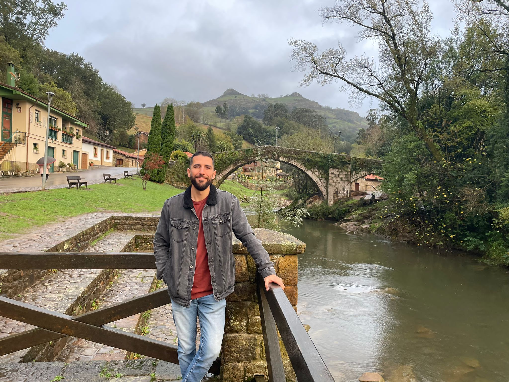

!!Hola!! Soy Carlos, ¡Bienvenido a mi Portfolio!

Proyectos
Sitio Web para "Café Aroma"
Simulador de Login con Validación
Tecnologías:
Intereses Personales:
Musica
Deporte
Motos
Historia
Contacto:
Sobre Mi
¡Hola! Soy Carlos Pérez Cabanillas, tengo 33 años y actualmente me estoy reinventando profesionalmente en el apasionante mundo del desarrollo y la ciberseguridad. Mi camino comenzó en el ámbito de la Psicología (Grado en Psicología y Máster en Recursos Humanos), lo que me dotó de habilidades clave en la gestión de personas, comunicación y análisis del comportamiento humano. Posteriormente, decidi entrar a las fuerzas Armadas donde actualmente trabajo como militar profesional en una unidad de caballería del Ejército de Tierra, recientemente con el empleo de Cabo, aprendiendo el verdadero valor del trabajo en equipo, la disciplina, el liderazgo y la toma de decisiones bajo presión. Actualmente estoy formándome como Desarrollador de Aplicaciones Web (DAW) y cursando un Máster en Ciberseguridad, un campo que me apasiona por su dinamismo, impacto y constante evolución. estoy mejorando mi nivel de inglés, para poder ser mas polivaliente y poder colaborar en entornos internacionales. Me considero una persona curiosa, resolutiva y colaborativa, con especial atención al detalle y con muchas ganas de seguir aprendiendo y creciendo profesionalmente en el mundo IT.
Proyectos

Gestor de Ventas
Aplicacion desarrollada con Java que gestiona las ventas de una tienda de instrumentos de musica. Permite gestionar informacion de Clientes, Inventario de instrumentos musicales y el registro de ventas.

Web para "Café Aroma"
Diseño y desarrollo de una web corporativa para una cafetería, con secciones de inicio, carta, galería y contacto. Realizado con HTML5 y CSS3 aplicando diseño responsive y accesible. Incluye formulario de contacto funcional con validación básica.

Simulador de Login con Validación
Formulario de login con validación en JavaScript que simula un acceso seguro. Implementado con HTML, CSS y JavaScript, con mensajes de error personalizados y control de campos vacíos. Proyecto pensado para familiarizarse con procesos de autenticación front-end.
Contacto
- GitHub: Carloscp92
- Instagram: @carlos_ss92
- LinkedIn: Carlos Pérez
- Email: carlos.cpc92@gmail.com